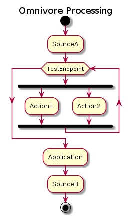

Flow
The flow of messages through an omnivore application is very straight forward:

- A Source receives a new message.
- The message is then passed to the Endpoint that owns the Source.
- The Endpoint executes the message through all Actions registered within the Endpoint.
- The Endpoint then passes the message to the Application.
- The Application sends the message to the correct next destination.